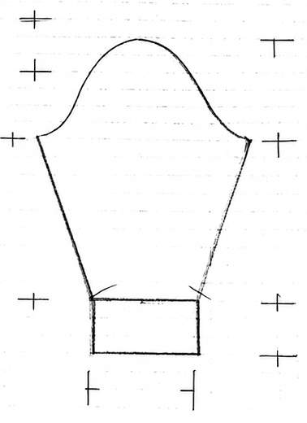

수편기(가정용 편물기) 패턴 코수·단수 계산기
실제 사용할 실·바늘로 10cm×10cm 스와치를 떠서, 세탁·스팀 다림질 후 1cm당 코수·단수를 재세요. 이 숫자가 아래 모든 계산의 기준이 됩니다.
입을 사람의 실측 가슴둘레에 여유분(오버핏)을 더해 완성 치수를 정합니다. 계산된 값은 버튼 한 번으로 아래 입력칸에 바로 넣을 수 있습니다.
직접 재기 어렵다면 표준 치수를 참고하세요 (행을 클릭하면 아래 입력칸에 자동으로 채워집니다).
| 구분 | 가슴둘레 | 어깨너비 | 등길이 | 소매길이 | 진동둘레 |
|---|---|---|---|---|---|
| 여성·작은 | 80 | 33 | 36 | 48 | 32 |
| 여성·표준 | 84 | 35 | 37 | 50 | 34 |
| 여성·큰 | 88 | 37 | 38 | 52 | 36 |
| 남성·작은 | 88 | 40 | 42 | 53 | 38 |
| 남성·표준 | 92 | 42 | 45 | 55 | 40 |
| 남성·큰 | 96 | 44 | 48 | 57 | 42 |
앞장과 뒷장은 목깊이를 제외하고 같은 수치를 씁니다. 전체길이는 세로(총장), 가슴너비는 가로 폭입니다. 목깊이는 앞장/뒷장 탭에서 각각 입력합니다.
계산된 수치를 실제 축척으로 그린 도식입니다.
고대콧수(진동에서 줄일 총 콧수)를 입력하면 막음코 × 1/3 → 나머지 × 1/2 → 나머지 × 2/3 순으로 나눠 되돌아뜨기 단계를 만듭니다. 앞장·뒷장에 동일하게 적용됩니다.
위 공통 입력값을 그대로 사용합니다. 진동(암홀) 곡선은 위 진동 계산 결과를 그대로 씁니다. 목깊이만 따로 입력하면 목둘레 곡선을 계산합니다.
공통 입력값은 그대로 쓰고, 목깊이만 따로 입력하면 목둘레 곡선을 계산합니다. 진동(암홀) 곡선은 앞장과 동일하며 위 진동 계산 결과를 그대로 씁니다.
소매기장·소매산 폭·소매부리(커프) 폭을 입력하면 콧수·단수로 환산하고, 커프~소매산 사이 늘림을 계산합니다. (소매산 곡선 자체는 공식 확인 후 추가 예정)

치수(cm)를 입력하면 현재 게이지 기준 코수·단수로 바로 환산합니다.
옆선·소매·진동 등에서 일정 구간에 늘림(또는 줄임)을 고르게 배분합니다. 시작·끝 조건에 맞는 방식을 선택하세요.
어깨 전체 줄임코를 막음코 + 되돌아뜨기 3단계로 나눕니다. (총×1/3 → 막음코, 나머지×1/2 → 1단마다, 나머지×2/3 → 2단마다, 최종 나머지 → 3단마다)
어깨콧수·어깨경사단수·되돌아뜨기 간격을 넣으면, 간격÷횟수로 되돌아뜨기 횟수를 구하고 어깨콧수를 (횟수+1)로 나눠 균등 분배합니다. 나머지 하나는 평단분(막음)으로 뺍니다.
고대콧수(목둘레 전체 콧수)로 중심막음코와 양쪽 카브산줄임코를 구하고, 삼각수 계단식(k, k-1, … , 1)으로 분해합니다.
목표 콧수에 맞는 계단식 단평 패턴을 자동 생성합니다. 기본 규칙: 1~n 값을 각 3회씩 사용(기본합=3×(1+2+…+n)), 목표가 더 크면 1→2→3→…을 순환하며 하나씩 추가합니다.
위에서 계산한 값이 계산되는 즉시 아래 도안에 자동으로 채워집니다. 아직 계산하지 않은 항목은 물음표(?)로 표시됩니다.
NOTUBIS · 수편기 패턴 계산기 · 오프라인에서도 동작하는 단일 HTML 파일